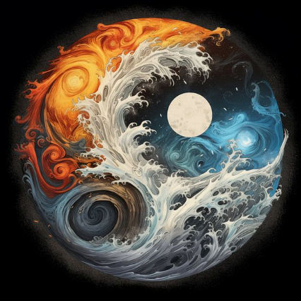
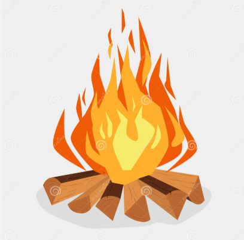
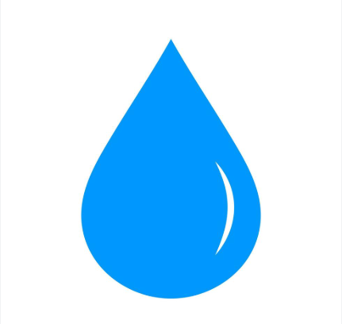
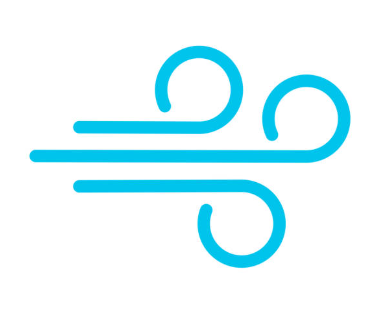
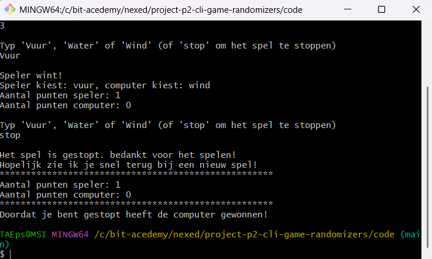

Doel:Het doel van het spel is om de tegenstander te verslaan door een winnende hand te kiezen.
(In dit geval het winnende woord omdat het op een computer in een commandline wordt gespeeld)



Benodigdheden:
1 speler want je speelt in je eentje tegen de computer.
De tekens:
1. Steen: Door het woord “Vuur” in de commandline te typen
2. Papier: door het woord “Water” in de commandline te typen
3. Schaar: door het woord “Wind” in de commandline te typen
1. Kies hoeveel rondes je wil spelen.
2. Typ “Vuur”, “Water” of “Wind” in de commandline.
3. De computer kiest ook “Vuur”, “Water” of “Wind”.
4. Vervolgens wordt bepaald wie er wint:
| Jouw keuze: | Verslaat: | Verslaat van: |
|---|---|---|
| Steen | Schaar | Papier |
| Papier | Steen | Schaar |
| Schaar | Papier | Steen |
Vuur wint van Water
Wind wint van Water
Water wint van Vuur
5. Als beide spelers hetzelfde hebben is het gelijkspel en wordt de ronde opnieuw gespeeld net zolang totdat er iemand gewonnen heeft. (Bij gelijkspel krijgt niemand een punt)
6. Per ronde die je wint krijg je 1 punt en wie na het aantal gekozen rondes de meeste punten heeft wint de game.
7. Bij gelijkspel na het aantal gekozen rondes wordt er nog 1 ronde gespeeld net zolang totdat er iemand wint.
8. Als je eerder wil stoppen met de game, typ “stop” om het spel te stoppen. (Dan heeft de computer gewonnen)
Het is alleen toegestaan om het woord “Steen”, “Papier” of “Schaar” te typen bij het maken van je keuze.
Anders zal het niet werken en wordt er gevraagd om een geldige input in te vullen.
Typ het woord “Stop” als je eerder wil stoppen met de game.

Het spel is klaar als het aantal gekozen rondes gespeeld zijn of door het woord “Stop” te typen.
Als je “Stop” typt wint niemand het spel maar als je alle rondes uitspeelt degene met de meeste punten wint het spel.
Bij gelijkspel wordt er nog een extra ronde gespeeld net zolang totdat er iemand wint.
Strategietips:
1.Let op patronen die de computer maakt om je win kans te vergroten.
2.Wissel zelf van teken als je vaak verliest.